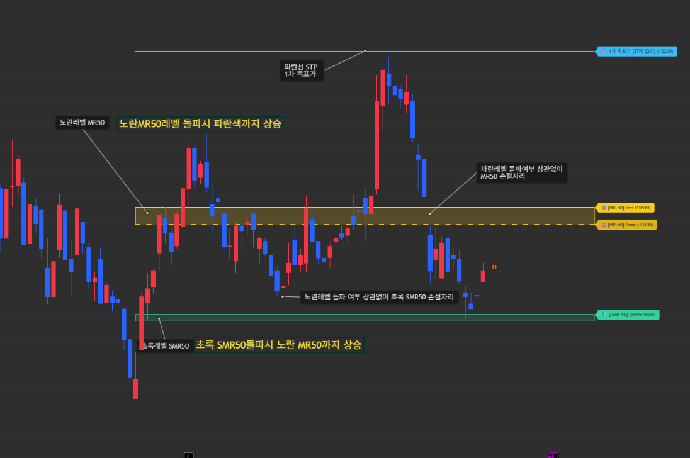
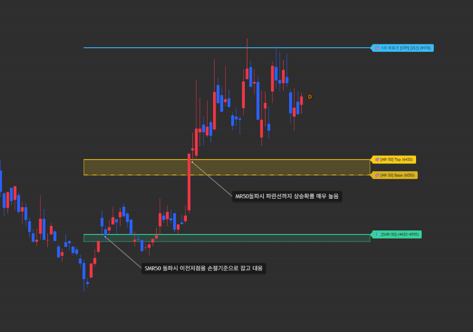
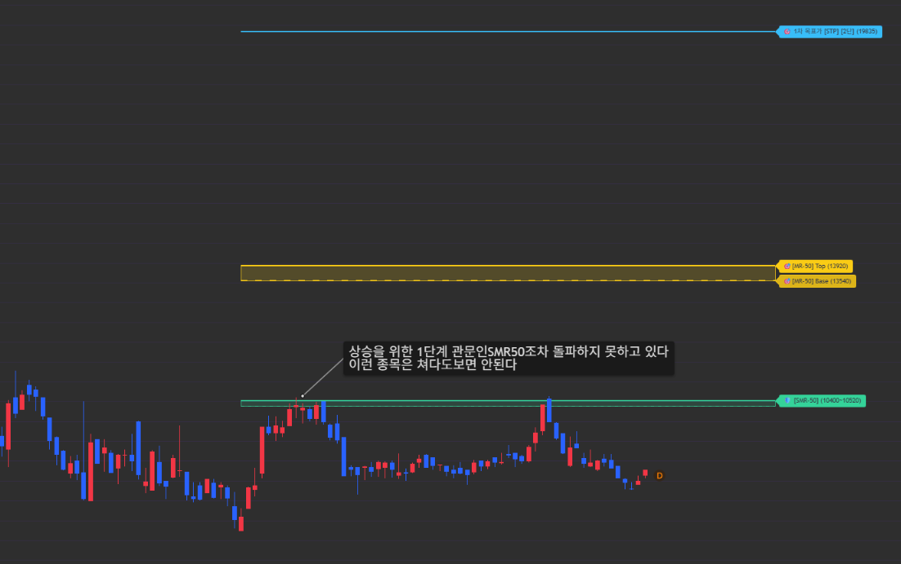
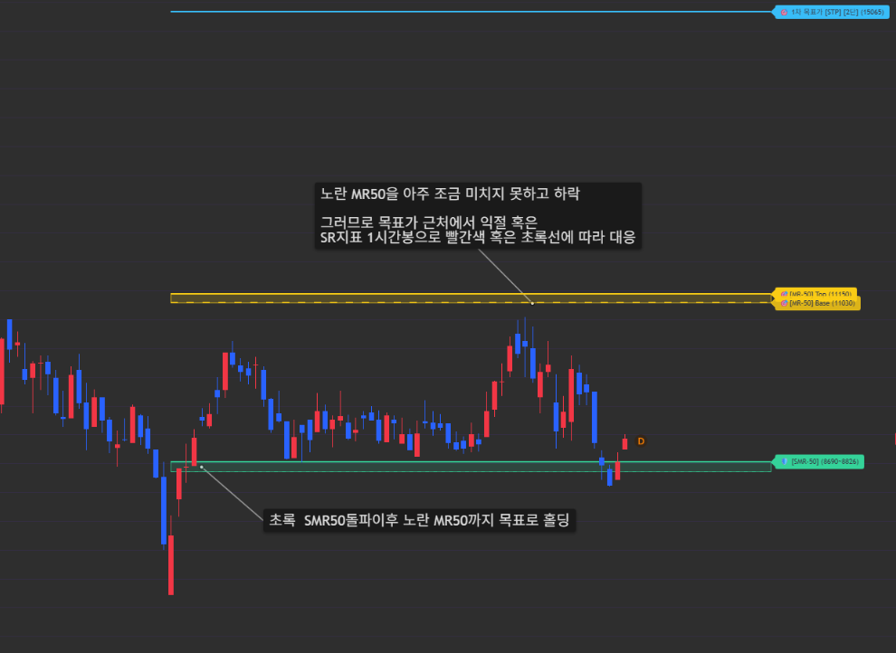
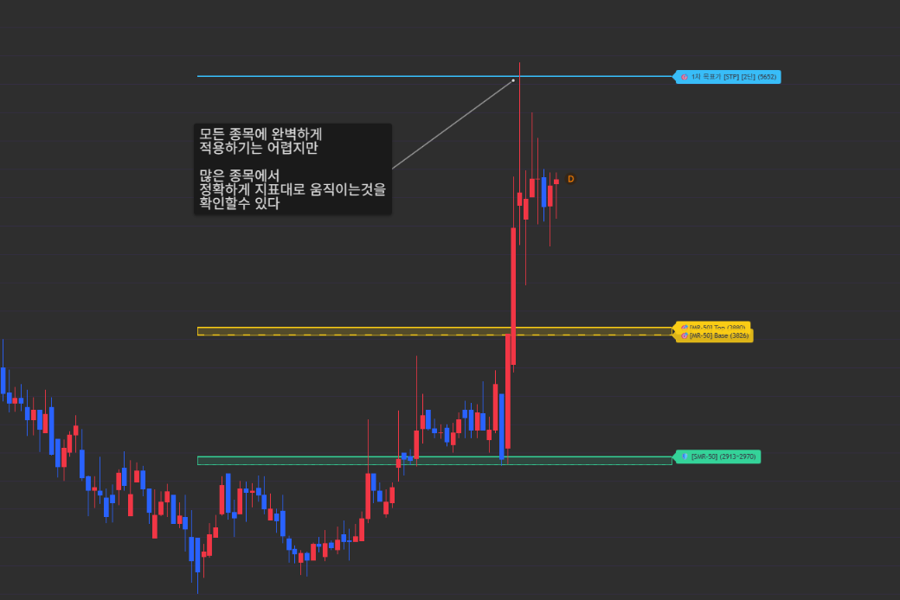
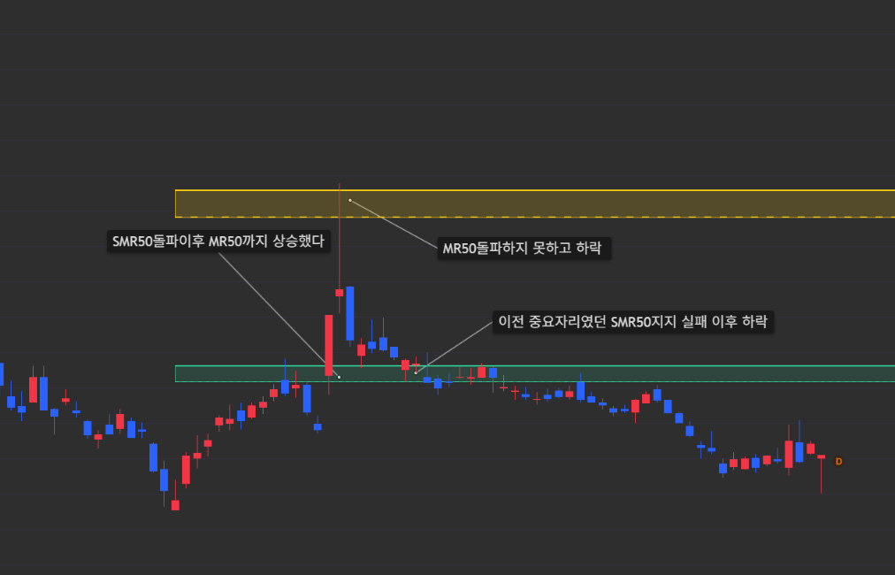
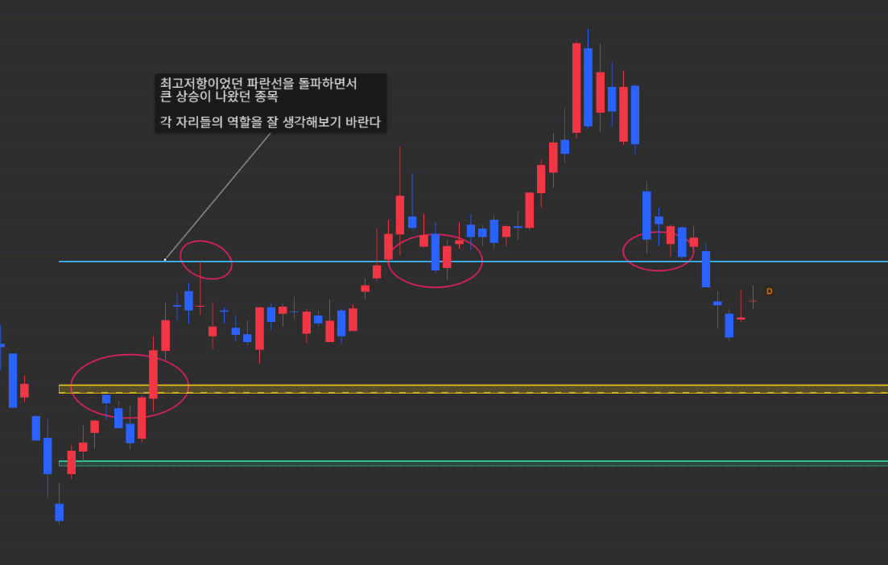
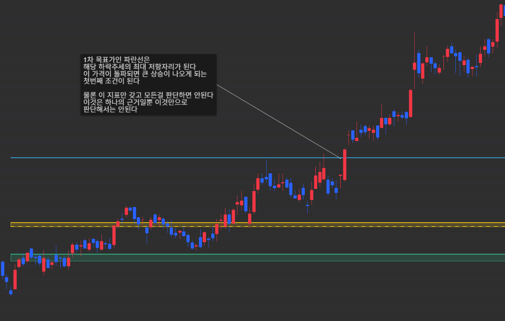
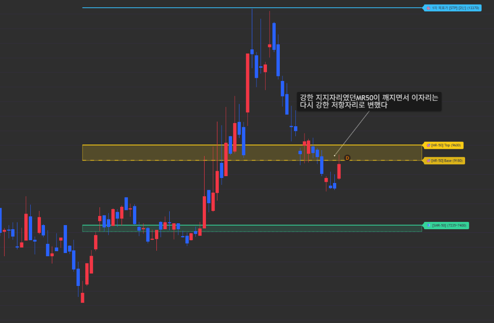

켄즈 파동마스터란
켄즈 파동마스터는 주가의 바닥이 확인된 시점부터 반등 시 거쳐야 하는 계단식 파동 메커니즘을 시각화하여, 사전에 목표 가격대를 제시하는 선행형 파동 지표입니다.
감이나 막연한 기대감 대신, 차트에 자동으로 표시되는 핵심 레벨(SMR-50 ➔ MR-50 ➔ STP)의 돌파와 지지 원리를 기준으로 원칙 있는 매매 전략을 세울 수 있습니다.
💡 핵심 기본 전제 (필독)
이 지표의 모든 매매는 아래 두 가지 기본 전제 위에서 움직입니다.

① 초록색 레벨 [SMR-50] 돌파 ➔ 노란색 레벨 [MR-50]까지
상승저점을 찍고 올라온 주가가 첫 관문인 초록색 [SMR-50]을 돌파하면, 다음 목표가인 노란색 [MR-50]까지 상승한다는 것이 첫 번째 기본 전제입니다.

② 노란색 레벨 [MR-50] 돌파 ➔ 하늘색 선 [STP]까지
상승주가가 노란색 [MR-50]마저 돌파해 내면, 최종 1차 목표가인 하늘색 선 [STP]까지 상승한다는 것이 두 번째 기본 전제입니다.
1. 차트 핵심 레벨 구성 한눈에 보기
• 초록색 박스 [SMR-50] — 단기 바닥 반등의 출발선이자 첫 번째 돌파 관문 (돌파 시 노란색 MR-50까지 상승 목표)
• 노란색 박스 [MR-50] — 추세 확장을 결정짓는 핵심 관문 (돌파 시 하늘색 STP까지 상승 목표)
• 하늘색 라인 [STP] — MR-50 돌파 시 도달하는 1차 최종 목표가 (본격적인 수익 실현 및 익절 구간)

2. 단계별 실전 매매 프로세스
진바닥 확인 ➔ 1단계: 초록 [SMR-50] 돌파 (노란 MR-50 목표) ➔ 2단계: 노란 [MR-50] 돌파 (하늘색 STP 목표) ➔ 3단계: 하늘색 [STP] 도달 및 익절
1단계: 진입 (초록색 SMR-50 돌파 ➔ 노란색 MR-50 목표)
주가가 저점을 찍고 반등하여 초록색 [SMR-50] 상단을 돌파할 때 매수 타점이 형성됩니다.
기본 목표: 초록색 [SMR-50]이 돌파되면 기본 전제에 따라 노란색 [MR-50] 레벨까지 상승 목표를 보고 홀딩합니다.

2단계: 추세 확장 (노란색 MR-50 돌파 ➔ 하늘색 STP 목표)
노란색 [MR-50]까지 올라온 주가가 이 자리를 뚫어내는지 확인합니다.
목표 확장: 노란색 [MR-50] 레벨이 돌파되면, 기본 전제에 따라 아주 높은 확률로 1차 최종 목표가인 하늘색 선 [STP]까지 상승합니다. 조급하게 매도할 필요 없이 하늘색 선을 향해 파동이 이어지는지 지켜봅니다.

3단계: 1차 목표가 도달 및 익절 전략 (하늘색 STP 라인)
노란색 [MR-50]을 뚫어낸 주가가 하늘색 선 [STP] 부근에 도착했을 때 비로소 본격적인 익절 전략을 실행합니다.
익절 전략: 파동 에너지가 강할 때는 하늘색 선을 정확히 찍거나 넘어가기도 하지만, 시장 상황에 따라 하늘색 선에 약간 못 미치고 밀리는 경우도 있습니다. 따라서 하늘색 선 근처에서 강한 슈팅(장대양봉/윗꼬리)이 나오면 선에 딱 닿을 때까지 기다리지 말고 선제적으로 전량 익절하거나 반익절(분할 익절)하여 수익을 챙기고 나머지만 지켜봅니다.

3. 상황별 대응 요약
• SMR-50 아래 — 관망 (아직 바닥권 반등 파동이 시작되지 않은 상태)
• 초록색 [SMR-50] 돌파 — 신규 매수 진입 ➔ 노란색 [MR-50]까지 상승 목표 설정
• 노란색 [MR-50] 돌파 — 추세 홀딩 유지 ➔ 하늘색 선 [STP]까지 상승 목표 설정 (이때부터는 이전 저항이었던 초록색 SMR-50이 핵심 지지선이 됨)
• 하늘색 [STP] 부근 슈팅 및 도달 — 1차 목표가 달성 ➔ 전량 익절 또는 반익절 후 잔여 물량만 관리 (도달 후 하락 시 이전 저항이었던 노란색 MR-50이 핵심 지지선이 됨)

4. 켄즈 파동마스터 핵심 원칙 & 주의사항
이전 저항 레벨의 '지지선 전환' 원리 (핵심)
주가가 상위 레벨을 돌파하거나 목표가에 도달하고 나면, 바로 한 단계 아래에 있던 '이전 저항 레벨'이 밀릴 때 지켜줘야 하는 핵심 지지선으로 바뀝니다.
노란색 [MR-50]이 돌파된 경우: 만약 주가가 곧바로 치고 나가지 못하고 밀리더라도, 이전 저항이었던 초록색 [SMR-50] 레벨이 지지되어야 다시 상승 파동을 이어갈 수 있습니다.

하늘색 선 [STP]까지 도착했다가 떨어지는 경우: 목표가 도달 후 조정이 나올 때는 바로 이전 저항 레벨이었던 노란색 [MR-50] 레벨이 지지되어야 추세가 살아남습니다.
만약 지켜줘야 할 이전 레벨(지지선)마저 하방으로 깨져버린다면 추세가 무너져 매매가 어려워질 수 있으므로, 그 자리가 이탈될 때는 미련 없이 정리 및 대응해야 합니다.

줄 때 챙기는 유연함 — 하늘색 선(STP)은 노란색 MR-50 돌파 시 볼 수 있는 1차 목표가입니다. 선에 정확히 닿지 않더라도 근처에서 슈팅이 나오면 욕심내지 않고 익절 및 반익절로 수익을 확정 짓는 것이 정석입니다.
지표 활용 시 유의사항 (참고용)
켄즈 파동마스터는 최대한 모든 차트에 적용할 수 있도록 파동 메커니즘을 정밀하게 설계했습니다. 하지만 종목마다 추세와 파동의 결이 각각 다르기 때문에 모든 차트에 100% 무조건 맞기는 어려울 수 있으니, 객관적인 기준을 잡아주는 나침반으로 참고하여 매매에 활용하시기 바랍니다.